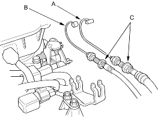
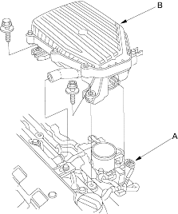

- Use fender covers to avoid damaging painted surfaces.
- To avoid damage, unplug the wiring connectors carefully while holding the connector portion.
- To avoid damaging the cylinder head, wait until the engine coolant temperature drops below 100°F (38°C) before loosening the cylinder head bolts.
- Mark all wiring and hoses to avoid misconnection. Also, make sure that they do not contact other wiring or hoses, or interfere with other parts.
- Make sure you have the anti-theft code for the radio, then write down the frequencies for the radio's preset buttons.
- Disconnect the battery negative terminal.
- Drain the engine coolant, refer to the '01 Civic Shop Manual on this CD (see page 10-8).
- Remove the throttle cable (A) and cruise control cable (B) by loosening the locknuts (C), then slipping the cable ends out of the accelerator linkage. Take care not to bend the cables when removing them. Always replace any kinked cable with a new one.

- Remove the intake resonator.

- Disconnect the Intake Air Temperature (IAT) sensor connector (A) and remove the breather hose, then remove the air cleaner housing (B).
